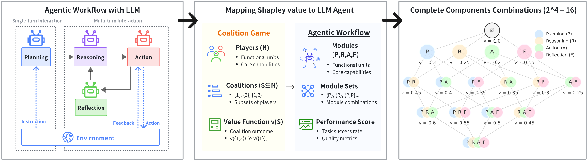
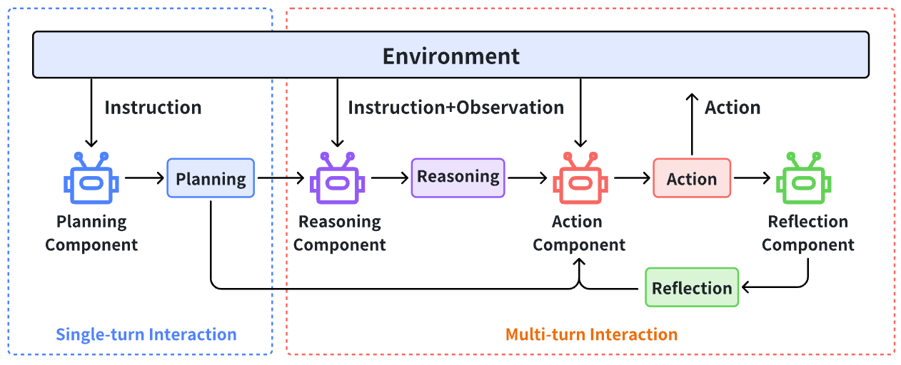
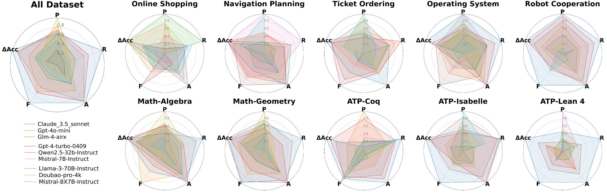
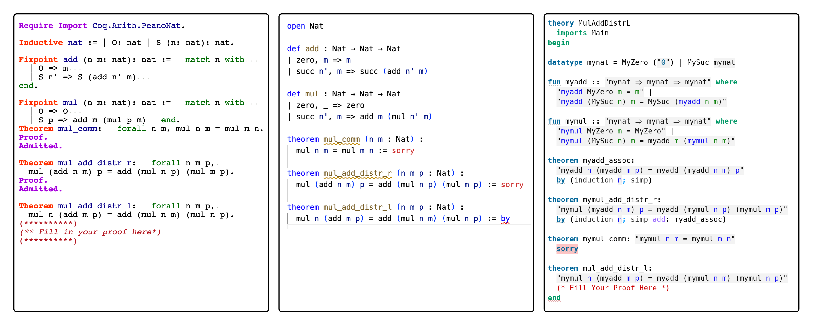

Builds a 111-task Lean 4 theorem-proving subset, alongside Coq and Isabelle, and evaluates LLM agentic workflow configurations on it.
Abstract
Agentic workflows have become the dominant paradigm for building complex AI systems, orchestrating specialized components, such as planning, reasoning, action execution, and reflection, to tackle sophisticated real-world tasks. However, systematically analyzing and optimizing these workflows remains challenging due to intricate component interdependencies and the lack of principled attribution methods. In this work, we introduce ShapleyFlow, the first framework that employs cooperative game theory to analyze and optimize agentic workflows. By applying the Shapley value to evaluate all possible component configurations, ShapleyFlow enables fine-grained attribution of each component's contribution and facilitates the identification of task-specific optimal configurations. Through a constructed dataset evaluated across 7 scenarios, such as navigation, math and OS, we demonstrate 3 key contributions: (1) Theoretical Framework: a principled game-theoretic approach for the attribution of contributions in agentic workflows. (2) Optimal Workflow Discovery: ShapleyFlow identifies task-specific component configurations that consistently outperform workflows relying on a single LLM across all tested tasks. (3) Comprehensive Analysis: we construct and analyze over 1,500 tasks, providing actionable insights and design guidelines for optimizing workflows across multiple domains.
Problem
Agentic LLM workflows combine planning, reasoning, action, and reflection components. Existing end-to-end evaluations do not attribute performance to individual components or capture how components interact.
Approach
ShapleyFlow treats the four workflow components as players in a cooperative game. Each component is swapped from a Llama3-8B baseline to a target LLM, all 16 configurations are evaluated, and Shapley values are computed from task success rates. Evaluation covers over 1,500 tasks in 7 domains with 9 LLMs. One domain is automated theorem proving, with 111 tasks each in Coq, Lean 4, and Isabelle.

Figure 1: ShapleyFlow framework for agentic workflow analysis and optimization. The left panel shows a typical agentic workflow with four core components (Planning, Reasoning, Action, Reflection) orchestrated through single-turn and multi-turn interactions. The middle panel illustrates our game-theoretic formulation, where workflow components are modeled as cooperative players with coalition outco

Figure 2: A vanilla agentic workflow with 4 components.
Results
Task-specific optimal configurations outperform single-LLM workflows in all tested domains. Computation-heavy tasks such as math and theorem proving gain most from upgrading the Action component. On Lean 4, Claude-3.5 alone reaches 84.7% versus 2.7% for the baseline, and the best configuration reaches 87.4%.

Figure 5: Radar plot comparing model performance across tasks with key contributions.

Figure 8: An Example Problem in Three Languages.
LLM
Coq
Lean 4
Isabelle
llama3-8B (baseline)
6.4
2.7
7.2
Claude-3.5
96.4
84.7
74.8
gpt-4-turbo
86.5
41.4
69.4
qwen2.5-32B
74.8
57.7
63.1
best configuration
94.6
87.4
78.4
Theorem-proving accuracy (%) by prover language (subset of models)